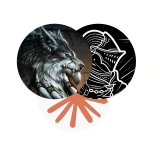

Bind Anything
How we bound Nim to native and web libraries.
https://rowdaboat.github.io/henka-nimconf-26
Who we are

Row, gamedev/demoscener.
Author of reploid and shaderc-nim.

.sOkam!, game and engine developer.
Author of webgpu-nim and cvulkan.
Henka
Henka is a bindings generator for Nim.
変化 (hen-ka): change, variation, transformation in Japanese.
Futhark
Futhark already exists and it's awesome,
why did we not extend it?
Command Line Interface
Henka CLI
Henka CLI
Generating bindings:
Henka as a library
import henka
let bindings = generate("header.h")
"bindings.nim".writeFile(bindings)Customization is a first class citizen
proc rename(kind: henka.LabelKind, name: string): string =
result = name.replace("point_", "")
proc pragmas(kind: henka.LabelKind, name: string, defaults: seq[(string, string)]): seq[(string, string)] =
result = defaults
if kind is henka.StructType:
result.add [("pure", ""), ("inheritable", "")]
let bindings = generate(
headerPath,
renamer = rename,
pragmaOverride = pragmas
)Henka as a library
Demo 1
WebGPU + Jolt Physics
Demo 2
Phaser
Henka v1
Architecture
Henka v1
How it worked
Henka v1
Workflow
Henka v1
Workflow
Adding features to henka was straightforward using real-world libraries as dogfood.
Henka v1
Workflow
1 - Find a complex C library (eg: webgpu.h)
Henka v1
Workflow
2 - Fix edge cases on the generator (assisted with Claude).

Henka v1
Workflow
3 - Review, rewrite or discard the code.
Henka v1
Workflow
4 - Repeat.
Henka v2
Starting over
Henka v2
New features, more scale
Henka v2
New features, more scale
Henka v2
How it works
Henka v2
Workflow
Henka v2
Workflow
About AI usage:
Henka v2
Workflow
Henka v2
Workflow
1 - Get a well-known C/C++/JS/TS library, generate bindings.
Henka v2
Workflow
2 - Write tests to cover for the new cases and bugs (or generate and review them).
Henka v2
Workflow
3 - Write the implementation (or generate and review it).